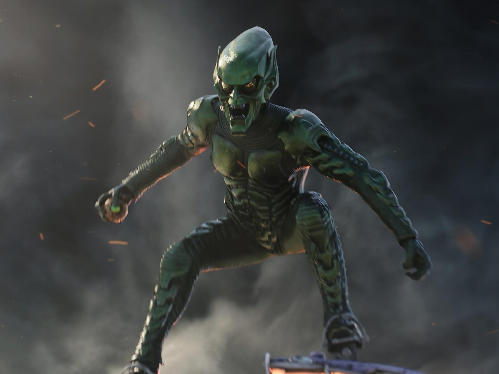
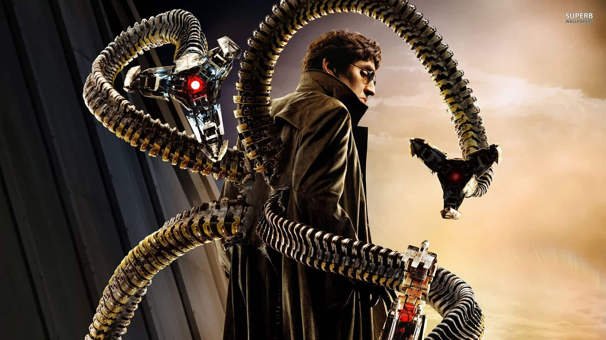
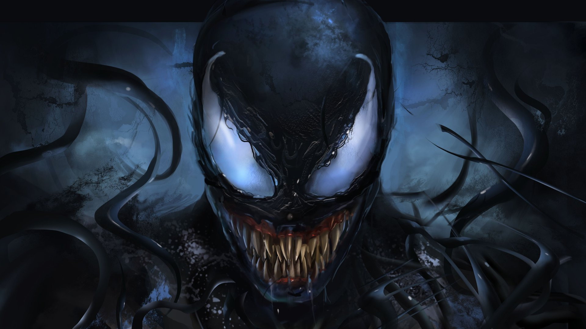
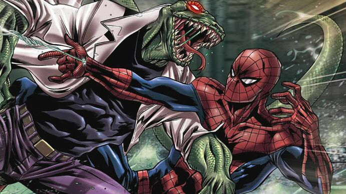

História:
Assista ao vídeo acima

Vingador
O Homem Aranha se torna um vingador em Capitão América: Guerra Civil, fazendo sua primeira aparição no universo cinematográfico Marvel (MCU). Ele se junta ao Capitão América e outros vingadores .

Escalar Prédios
Aderir as mãos em superfícies utilizando a Força de Van Der Waals . Cerdas microscópicas permitem que lagartixas realizem a adesão a seco . Exemplo de como ocorre na natureza, com os répteis .

Sentido Aranha
Intuição que permite alertar que algo está prestes a atingir Peter. Provocando uma sensação de formigamento atrás do crânio do super-herói, que permite escapar da maioria dos ataques que sofre."Habilidade única".
Criador
Stan Lee (1922-2018) foi um editor, roteirista e empresário norte-americano, um dos mais notáveis criadores de histórias em quadrinhos, sendo corresponsável por grandes super-heróis e vilões da Marvel Comics, como o Homem-Aranha, Thor, Hulk, X-Men, Pantera Negra, o Demolidor, Homem de Ferro e Quarteto Fantástico. Stanley Martin Lieber, conhecido como Stan Lee, nasceu em Manhattan, Nova Iorque, Estados Unidos, no dia 28 de dezembro de 1922. Filho de judeus imigrados da Romênia começou a trabalhar cedo. Desde jovem gostava de escrever e na adolescência planejava começar um romance.


Pricipais Vilões
Duende Verde
| Origem | Habilidades |
|---|---|
| Norman Osborn é um empresário rico e corrupto que se torna um supervilão após um experimento químico dar super poderes a ele. Devido aos produtos químicos, o Duende Verde se tornou uma entidade separada no cérebro de Norman. As lembranças só retornaram para Osborn tempos depois resultando no Duende tentando assumir o controle. | Força sobre-humana: O soro que ele ingeriu aumentou sua força física, tornado-o muito mais forte do que um humano comum. Um outro poder que Osborn possui é o fator de cura. Osborn é capaz de se recuperar de grandes danos se tiver tempo suficiente. Além disso velocidade, agilidade, resistência e inteligência são seus pontos fortes. |
Dr. Octopus
| Origem | Habilidades |
|---|---|
| Otto Octavius era um cientista nuclear que desenvolveu dois pares de braços mecânicos controlados remotamente para manipular materiais radioativos. Um dia, seus experimentos dão errado, fundindo as partes robóticas ao seu corpo. O excesso de radiação mexe com o seu cérebro e ele se torna o perigoso vilão Doutor Octopus. | Carrega nas costas quatro tentáculos flexíveis de metal que são controlados com o seu pensamento. Seus tentáculos alcançam altas distâncias, suportam 8 toneladas de massa e geram rajadas de vento. Além de demonstrar habilidades de concentração surpreendente, ele também é especialista em radiação e engenharia. |
Venom
| Origem | Habilidades |
|---|---|
| O simbionte venom encontra Eddie Brock, um repórter que perdeu o emprego porque o Homem-Aranha sempre conseguia matérias melhores. Portanto, começa a sentir raiva de Homem-Aranha, o que atrai Venom. Como consequência, ambos se unem pelo ódio ao Homem-Aranha e passam a buscar mudança. Acima de tudo, as histórias apresentam Venom como alguém que tem afeição pelo Peter Parker, porque acredita que ele seria o hospedeiro ideal. | Seu ataque não é detectada pelo sentido aranha de Peter Parker.Quando encontra um hospedeiro, consegue netralizar um câncer para continuar dentro da vítima. Além disso se aproveita da maleabilidade de seu tecido para fazer com que seus braços e demais partes adotem o aspecto de uma lâmina e outros objetos perigosos. E conta com um aspecto gelatinoso, que dá a ele um ar de instabilidade, fazendo com que suas partes se desprendam e se movam independente com propósitos definidos. |
Lagarto
| Origem | Habilidades |
|---|---|
| Doutor Connor, servindo o exército como médico atende soldados feridos no campo de batalha. No meio do combate, seu braço é ferido e precisa ser amputado. Depois de retornar à vida civil, Doutor Connors passa a procurar uma forma de recuperar o membro perdido. Sua grande aposta está no DNA dos répteis, que são conhecidos por recuperar membros inteiros naturalmente. Porém ao construir o soro e aplicá-lo, o DNA réptil domina seu corpo e ele se transforma na criatura conhecida como Lagarto. | Ele tem superforça, sendo capaz de levantar até 12 toneladas. Sua velocidade também é acima do normal, já que corre cerca de 70km por hora. Graças à sua musculatura e escamas, o Doutor Connors também é mais resistente que um humano, além disso, seu corpo produz toxinas que reduzem o cansaço. Connors ainda tem um alto fator de cura, já que se regenera de grandes danos em curto tempo. O Lagarto também conta com garras e presas afiadas, escala paredes e comunica telepaticamente com outros répteis. |